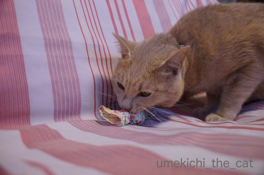
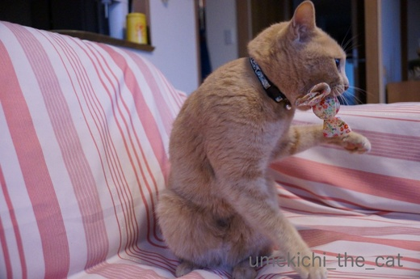
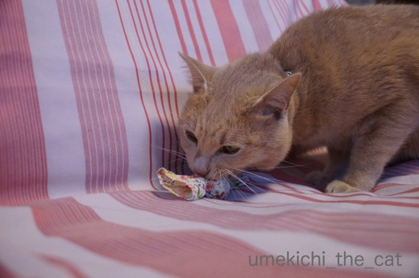
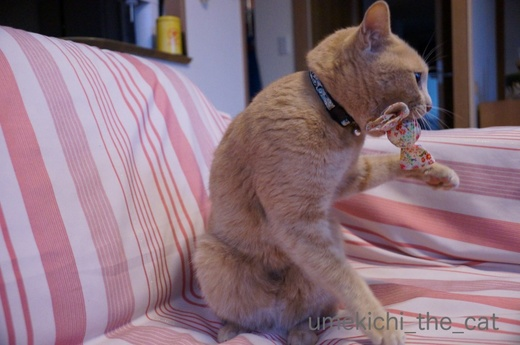

でろでろキャンディー [梅吉]
寒い夜もおかーさんのお布団の中で「ぷーすか」いびきをかきながら
（自分だけ）熟睡している梅吉さんは今日も絶好調です！

またたびキャンディに染み込んだ自分のかほりをチェックしてー

小首をかしげたらー

（ローリング）ていっ！

そのあとは心ゆくまでがぶがぶします。

遊び終わった後は絞れるんじゃないかと思うくらいおヨダででろでろ・・・
時々日光消毒していますw
猫のいびきの音って結構大きいんです。音のバリエーションも豊富ですwww
 ↑ガブッと一押し↑
↑ガブッと一押し↑
先週のお話ですが宇治に行ってきました。
おなじみ10円玉のデザイン、平等院鳳凰堂。
屋根の上には「鳳凰」が。
これはレプリカで本物は敷地内の鳳翔館に展示されています。
猛禽類系の嘴にクワッと鋭い足の爪、伝説の鳥鳳凰は竹の実と甘露を食した、
なんて言われているけど肉食系じゃないかしらねー。
いろいろネットで調べていたら一万円札の裏側の鳥
キジバージョンと鳳凰バージョンがあるそうです。
キジだとばかり思っていました。
実物を、と思ってお財布開けたら一万円札がなかったわwww
お財布に一万円札が溢れているよ！というそこの貴方、
裏面の確認をしてみてくださいねー＾＾
宇治上神社はこの立て札を撮ったのに本殿の写真がない・・・汗
「世界遺産」は自慢しなくて良いと思います^^;
そんなものに登録されなくても十分に神々しい素晴らしい本殿。
テーマパークのような平等院とは違って神域の空気が漂う落ち着いた空間でした。
色づき始めた紅葉のトンネルも潜ってきました。
平日だったのに観光客（外国人）の多かった事！
京都を落ち着いて観光・・・はなかなか難しいようです。
（自分だけ）熟睡している梅吉さんは今日も絶好調です！

またたびキャンディに染み込んだ自分のかほりをチェックしてー

小首をかしげたらー

（ローリング）ていっ！

そのあとは心ゆくまでがぶがぶします。

遊び終わった後は絞れるんじゃないかと思うくらいおヨダででろでろ・・・
時々日光消毒していますw
猫のいびきの音って結構大きいんです。音のバリエーションも豊富ですwww
先週のお話ですが宇治に行ってきました。
おなじみ10円玉のデザイン、平等院鳳凰堂。
屋根の上には「鳳凰」が。
これはレプリカで本物は敷地内の鳳翔館に展示されています。
猛禽類系の嘴にクワッと鋭い足の爪、伝説の鳥鳳凰は竹の実と甘露を食した、
なんて言われているけど肉食系じゃないかしらねー。
いろいろネットで調べていたら一万円札の裏側の鳥
キジバージョンと鳳凰バージョンがあるそうです。
キジだとばかり思っていました。
実物を、と思ってお財布開けたら一万円札がなかったわwww
お財布に一万円札が溢れているよ！というそこの貴方、
裏面の確認をしてみてくださいねー＾＾
宇治上神社はこの立て札を撮ったのに本殿の写真がない・・・汗
「世界遺産」は自慢しなくて良いと思います^^;
そんなものに登録されなくても十分に神々しい素晴らしい本殿。
テーマパークのような平等院とは違って神域の空気が漂う落ち着いた空間でした。
色づき始めた紅葉のトンネルも潜ってきました。
平日だったのに観光客（外国人）の多かった事！
京都を落ち着いて観光・・・はなかなか難しいようです。

カフェオレ色の梅吉

梅吉 2023年8月10日 永眠


梅吉と出会った譲渡会

犬猫の理由なき殺処分ゼロ
妄想広告
UMEKICHI 光

爆発的に早い！
時々攻撃的！
Thanks to Mr.Boss365
爆発的に早い！
時々攻撃的！
Thanks to Mr.Boss365

梅吉さん、一心不乱（笑）
またたびキャンディの威力は絶大ですね。
平等院鳳凰堂、綺麗になったようですね〜
先日、夜のライトアップが3日までと、3日の夕方に聴いていた夫、
残念そうでした（笑）
若い時なら即、行っていたバズです。
by kiki (2017-12-05 17:29)
おぉ～！梅吉さん！我を忘れてって感じで
夢中ですねぇ～(*^_^*)
目が飛んでます？？
にゃんこを家族として迎えたことがないので
分からなかったのですが
ノドのゴロゴロ音を聞いたとき・・・
携帯のバイブが動いていると思い
探した記憶があります（笑
平等院！素敵ですねぇ～
紅葉のトンネルも♪
秋の京都は一度訪れてみたいですが
なかなか難しいです(;^_^A
by きぃ (2017-12-05 17:58)
またたびキャンディお気に入りなんですね~。かわいいからうちでも買おうかな。いびきの凄さならうちのドンごろーにはかなわないでしょう(自慢することか)うるさくてかなわないけど止まったら止まったで息してるか気になって眠れん。
1万円札キジは古いバージョンですよね? 大金持ちで万札わっさわさの我が家にも鳳凰しかないです。でも鳳凰ってこんな鳥なの???
by zombiekong (2017-12-05 18:06)
またたびキャンディ可愛い♪
梅吉エキスででろでろになっちゃうのかｗ
猫のいびきは可愛い。特に「ごめん寝」してるときのいびき。好きだな～。
家はくるみがたまに寝言をいうよ(^-^)
鳳凰堂の写真すごくきれいに撮れてるね。レプリカは遠目がいいかも。
１万円札？1束調べたけど全部鳳凰だった～。てへっ。てへへ。
by emi (2017-12-05 18:08)
あ！キャンディ(^^)ホントだー。形が！
小首をかしげている梅吉くん、カワイイ〜。
うちは、よくそのままコテンと倒れ込んでしまってドン！って音がします(^^;
最後の写真、こっち向いて撮影している人がいますね〜
この人の写真にはちぃさんが写ってるんだ〜！
by も〜 (2017-12-05 18:10)
梅吉さん無我夢中で遊んでいますね！
平等院は行きたいけどまだ行ったことが無いです(^^)
by ma2ma2 (2017-12-05 19:42)
またたびキャンディお気に入りのようですね。
もうひとつ買っておいたほうがいいかも知れませんね。^^)
宇治の平等院鳳凰堂、美しいですね。紅葉も。
行ってみたいです。
by yes_hama (2017-12-05 21:18)
梅吉君もいびきをかくんですね(´∀｀*)ｳﾌﾌ
あかりも時々、「ゴゴッ」とかいってるので、あかりだけかと恥ずかしかったのですが、↑の皆様のコメントを読ませて頂いたら、
何だかみんなもみたいで、安心しました(≧▽≦)
マタタビキャンディー可愛いですね。
お部屋の飾りでもいいくらい♪
ほぉ～！10円玉の鳳凰堂、リアルだ～＾＾
私もたまにはそういう所に出かけて、心を洗いたいです( ´∀｀ )
by マーヤ (2017-12-05 22:08)
梅吉さん、マタタビキャンディお気に入りですね！
ウチのはガジガジ噛んで食べてしまうのでは・・と不安で、同じ店の大きい「またたびミネット」を蹴って噛んで遊んでます^^;
同じく搾れるぐらいよだれでデロンデロンになりますよ。
平等院へ行ったのは高校の遠足が最後・・・。
ベストシーズンに京都を静かに巡るのは年々難しくなってますね。
by ゆきち (2017-12-05 22:18)
マタタビの威力は凄いですね(^^)
一万円札は銀行に預けています。
財布には入っていませんでした(^^;
by riverwalk (2017-12-05 23:14)
猫さんのいびき？
聴いたことないなぁ。
気になる…
平等院鳳凰堂、10円玉と競演写真を撮りました？
by ふにゃいの (2017-12-05 23:22)
梅吉さん、無我夢中で遊んでますねぇヾ(*´∀｀*)ﾉ
可愛いです！！
by sumi-cyan (2017-12-06 00:23)
長男君は部屋に響くイビキの持ち主でした。
聞けなくなって寂しいです＾＾；
by ぽちの輔 (2017-12-06 06:46)
うちもマタタビの木片をおもちゃにしていましたが、よだれが激しくて後片付けが大変でした(^^;)
でも、不思議といびきは聴いたことがありません。
気がつかなかったのかな・・・。
by kou (2017-12-06 07:37)
またたびキャンディ、かわいいデザイン♪。
ちぃさんのお手製なのかな？
いびき、いろんなバリエーション、ありますよね！
あと、それプラス寝言もあったりで、
目を覚ましてまじまじと眠るねこの顔を眺めてしまいます。
野性のカケラもないなぁってｗ。
by ハリネズミ (2017-12-06 08:38)
ナノも「誰?」ってくらいの寝息をたてます。梅吉くんは「ぷーすか」なのですね。ナノは「すぴーすぴー」です(^O^)
by palpal (2017-12-06 15:08)
梅しゃんの繊細な色合いはピンクも似合いますね～♪ ご両親が戻られて、幸せ満喫している感じ！
by Ginger (2017-12-06 15:22)
またたびキャンディ、可愛い♪
梅吉さん、思いっきり楽しんでるんですね＾＾
鳳凰、じつは肉食系？！
言われてみれば～確かに。
宇治上神社、素敵そうですねえ‥＾＾
by sana (2017-12-06 19:08)
うちもデロデロになります(⌒-⌒; )
梅吉さん、ローリング技で自分から難易度アップですね( ^ω^ )
回収はかみさんの仕事ですw
ニャンコのいびきや寝息って結構煩いらしいですねぇ(°_°)
えぇ、私は聞いたことがありませんが、かみさんがほぼ毎日
「ノエルと圭太の寝息といびきがうるさくて寝不足(*_*)」と
自慢してます(ｰ ｰ;)
by ニッキー (2017-12-06 19:58)
またたびキャンディ、ほんっと気に入ってるのね。
良かったわー(笑)
え！キジバージョンと鳳凰バージョン？？？？
調べてみたら、うちのは全部鳳凰だった(笑)
平等院鳳凰堂、きれいになってからはまだ行けてないので行きたいなー。
ここの雲中菩薩サマの1体と結縁結んでるんだ♪♪ 飾られる前に触ったの^^
ちゃんとご挨拶しなくちゃだわー。
by リュカ (2017-12-06 22:56)
またたびにメロメロなんですねー(^_^;)
にゃんこのいびきって、聞いたことなかったと思います。。。
by よーちゃん (2017-12-07 08:22)
うちのもひとり、けっこう大胆ないびきかきます^^;
コヤツめ！優雅にねおって！・・・なんて思うことしばし。。
ガジガジ〜からのベトベト〜、分かります。我が家は放置です(｡-_-｡)
青空の平等院、美しいですね。
たくさんある（笑）一万円札の裏を見てみたら
全部鳳凰？でした。キジは一つ前のデザインですよね。
言われてみればいつの間に変わったんだ・・・。
by Ja-Kou66 (2017-12-07 23:58)
kikiさん＞
夜のライトアップもしていたのですねー。
紅葉に合わせてだったのかな＾＾
水嵩の多かった宇治川と夜紅葉、なかなか迫力がありそうです！
きぃさん＞
携帯のバイブ並みのゴロゴロの主、なかなかの喉の持ち主ですね〜＾＾
ゴロゴロ音もニャンコによって色々です。
梅吉は「ボロボロボロ・・・・」って感じですw
秋の京都、良い時期には宿を取ることするら難しいようですよ^^;
zombiekongさん＞
またたびキャンディの他にキッカー状のものや可愛いのがたくさんあります。
リュカさんが教えてくれたお店のサイトはこちらです↓ ↓
http://lechat.shop-pro.jp
私も何か買っちゃおうかなぁって思ってますよ＾＾
一万円札キジは旧バージョンなんですね。
一万円札に縁のない生活なもので・・・^^;
鳳凰、想像上の鳥だけにみんな勝手に作ったり書いたりしていますよねー。
それ、鳥じゃ無いし！ってのもあったりしてw
emiさん＞
またたびエキスは梅吉エキスにとり変わっているものと思われますwww
こんどニオイ嗅いでみようかしら・・・（猫変態）
くるみちゃんの寝言！？可愛いだろうなぁ(≧▽≦)
梅吉はいびきオンリー。
先代猫は「うわぁぁぁっ」とよく寝言いっていました＾＾
emiさん宅ではお札は「枚」じゃなくて「束」単位なのねーー(＠◇＠)
も〜さん＞
結構な勢いでドン！ってしますよねー。
この日はソファの上だったのでマイルドな感じでしたが
フローリングの上ではハードに倒れこんでます。
痛く無いんだろうか・・・
あ！誰かの写真に写ってるんだ^^;
画像処理で消されているかもw
ma2ma2さん＞
飛行機の直行便があるとひとっ飛びですよね＾＾
yes_hamaさん＞
本当に＾＾
またたびエキスも薄れて梅吉エキスに変わりつつあるので
スペアが必要そうなんですよ。
宇治は春夏秋冬それぞれに美しいな、と思っています。
マーヤさん＞
あかりちゃん可愛い顔して「ゴゴッ」なんですねーＯ(≧▽≦)Ｏ
レディとし伏しておきたいお話かもなので
おばちゃんは聞かなかったことにしておきますw
関西に住んで良かったことの一つが神社仏閣が多いこと。
飢えを満たすように色々見て回ってます。うれしい！！
ゆきちさん＞
またたびミネットも可愛いですよねー♪今それを狙っています＾＾
こてつくんはねむねむルシャとあわせてヘビィユーザーですね！
関西圏では平等院は遠足地なんですねー。
私は高校の修学旅行で来ているのですが
抹茶アイスを食べたことしか記憶になくて・・・
３０年近く経ってやっとリベンジしました^^;
by ちぃ (2017-12-09 11:30)
riverwalkさん＞
梅吉はあまりマタタビには反応しないんですが（普段からハイだからw)
キャンディは見た瞬間から背中の毛がボッ！と逆立ったそうです＾＾
一万円札！そうそう！！我が家も銀行にはうなるほど・・・・^^;
ふにゃいのさん＞
いびきも色んなタイプがあるようですよ＾＾
中には鼻ちょうちんなんて技をお持ちのニャンコも！
競演写真！その手がありましたね！！逃したー！！！
sumi-cyanさん＞
他のマタタビにはあまり反応しないのですが
またたびキャンディには無我夢中なんですよー＾＾
ぽちの輔さん＞
そこまで大きな音とは！！
あ、でも私も最初おっとのいびきだと思いました。
人間並みのいびきを立てる子が多いのですねー＾＾
kouさん＞
べとべとの木片・・・
それはベトベトの噛みちぎった段ボールと同じくらい大変そうです^^;
いびき、寝言・・・次のにゃんこで（笑）観察して見てくださいねー！
by ちぃ (2017-12-09 11:42)
ハリネズミさん＞
またたびキャンディはお客様からのプレゼントなんですよー＾＾
他にも色んなタイプがあるのではりねずみさんもいかがですか？
http://lechat.shop-pro.jp/
ここのサイトです。
寝言は先代の猫がよく言ってましたwなつかしいなぁ・・・
palpalさん＞
そう＾＾
私も最初梅吉だと思わなくて「誰？」（うちの場合はおっとだけだけどw)でしたー。
寝息、寝言みなにゃん色々あるけれど、梅吉はお口くちゃくちゃもするわw
夢の中でも食いしい坊です(≧ω≦｡)
Gingerさん＞
寒さも本格的になりましたが梅吉が活動出来なのは幸せを満喫しているからかな＾＾
梅吉、何色でも似合うんですよー（親バカです^^;）
sanaさん＞
またたびキャンディは最近いちばんのお気に入りおもちゃです＾＾
宇治上神社は静かで素敵なところでした。
ただ、時期的に七五三仕様だったのがなんとも・・・・^^;
ニッキーさん＞
ローリング技、遊ぶ時おっととプロレスをする時よくするのですが
なんの意味があることやら・・・^^;です。
貯めた力を対象物にうまく伝えるとか？？
可愛いくて楽しいので見ている方としては嬉しいのですがw
１にゃんでも結構気になるのに２にゃん分のいびき・・・
ゴッドマザー様、日々お疲れ様です！
リュカさん＞
たまたびキャンディ活躍していますよー！本当にありがとう！！
そろそろスペアを買おうと思っています＾＾
雲中菩薩サマと？触った？？あの麗しい仏様を？？羨ましい！！
持っていた楽器がリュカさんのラッキーアイテムになりそう＾＾
よーちゃん＞
またたびキャンディにはメロメロのでろでろですー(≧ω≦｡)
にゃんこのいびき、人間並みに大きい子が多いです。
機会があったら気にしてみてくださいね＾＾
Ja-Kou66さん＞
夜中人の腕をがっつり枕になんてしてぷーすか熟睡していると
「自分だけ熟睡してー！もー！！チューーー！！！」
なんてしちゃいます(^_－)☆
一万円札は切り替わった、様ですね。
全くもっていつのまに、です^^;
by ちぃ (2017-12-09 15:02)